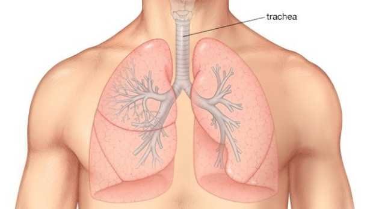

Trachea Tumors

CAUSES
The most common tracheal tumor, squamous cell carcinoma, is thought to be a direct result of smoking. If you are a smoker, your doctor can recommend resources for quitting. Another risk factor is a hemangioma, which may spread from the face to the neck.
It is recommended that you check with your physician if you experience any of the symptoms listed above, if only to rule out a tumor as the cause.
SYMPTOMS
- Wheezing, shortness of breath and coughing, with or without blood.
-
Noisy breathing, including a gasping sound.
-
Frequent upper airway infections.
-
Difficulty swallowing and hoarseness, which may indicate the tumor has grown beyond the trachea and is pressing against the esophagus.
DIAGNOSIS
- Computed tomography (CT) scans. These scans show pictures that can define the size of a tumor, narrowing of the trachea and the status of the surrounding lymph nodes.
- Bronchoscopy. A bronchoscope (a tube with a tiny camera at the end) is inserted into the trachea. This allows your physician to see any abnormalities in the trachea as well as remove cells to test for cancer (biopsy). Virtual bronchoscopy is a “picture” of the trachea by a CT scan without the need for a bronchoscope. This cannot produce a biopsy but can take an excellent image to see the extent of the tumor.
- Pulmonary function testing. This measures how well the lungs are working and may discover a classic pattern that suggests a blockage in the trachea.
TREATMENTS
- A tracheobronchial airway stent. A tube made of metal, silicone or other material, is inserted into the trachea to keep the airway open.
- An operation to remove part of the trachea and the tumor, which is the preferred treatment, if feasible. The surgeon then connects the remaining ends to each other. Other special techniques may be used to pull together the ends of the trachea to connect them.
- Laser therapy may be used, which, essentially, vaporizes the tumor.
- Photodynamic therapy. This is a multi-step, outpatient procedure. A medicine (Photofrin) is injected into your veins. Over the next two days, the medicine is concentrated into the tumor but not active. Then, a bronchoscope aims a laser light at the tumor to activate the Photofrin and destroy the tumor. A few days after that, a bronchoscope is used to remove the dead tumor tissue. While this often effective for shrinking a tumor, it is not curative. Photofrin usually makes patients likely to develop serious sunburns for about a month after taking it.
- Micro-debriding allows for a tube with a micro-debrider to be inserted into the tumor via a bronchoscope. The debrider "chews" through the tumor to open the trachea.
- Coring a tumor with a rigid bronchoscope to separate tumor tissue from the inner wall of the trachea.